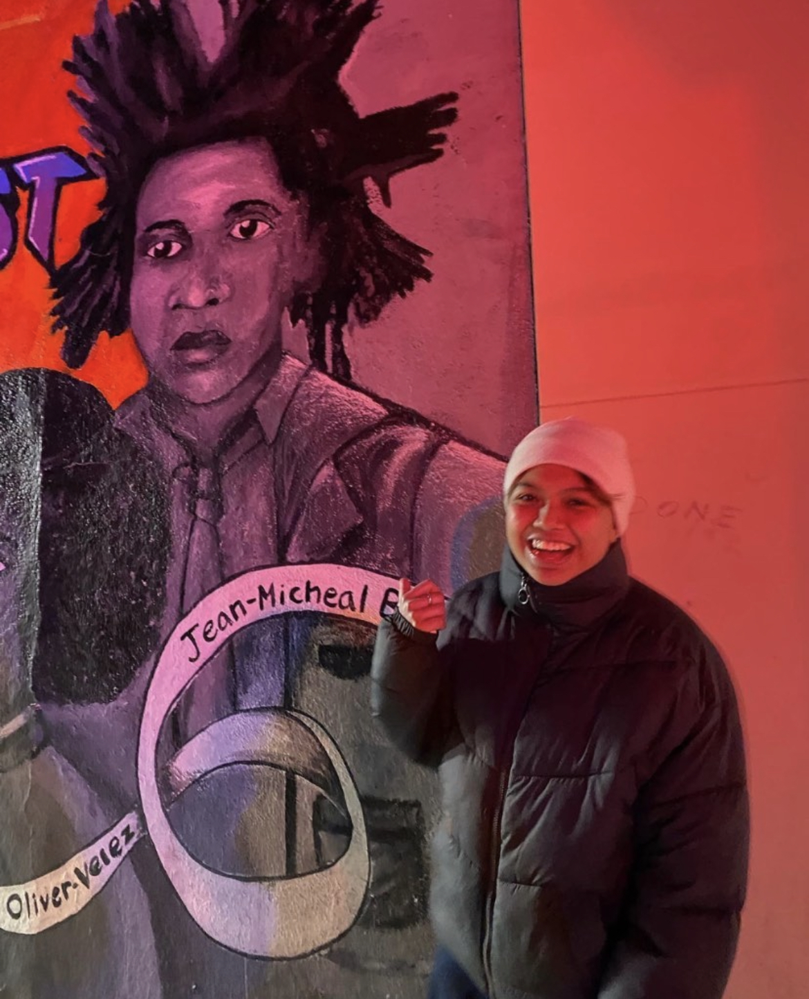

Cancer Sun, Virgo rising, Capricorn Moon.
My name is Dids. I know, weird name. It came from my last name "Dideles". My government name is Angela, but people thought my last name was cooler and they thought it was even cooler to shorten it to "Dids". I thought it was cool as well, so I have no shame telling strangers, professors, and employment managers to refer to me as so. My pronouns are they/she and I stand at exactly 5'0. A big part of who I am is my filipino identity. I was born in Iloilo City, Philippines. For those who are huge fans of indie pop, the singer beabadoobee and I are from the same city. I moved to America, specifically, Queens, New York, when I was about four years old so I dont quite remember much. I still live in New York City and have made a grounding life here. A significant part of my day is spent on the subway hopping from one New York City to another. New York is robust, scary, and fast. However, I would not change it to live a life in the tranquil suburbs.
There is only so many things I can do in New York City. I feel quite a pressure to stand out in such a city, but I find enjoyment in things I like to do just because I like to do them. I am a student at BMCC. It is my last semester and I am excited to wherever I am heading off to.I major in liberal arts, but I would like to enter media mixed with computer science when I transfer. I also work at PacSun Soho as a sales associate to be able to feed myself in between classes. It's nothing crazy, but I actually like it. I dont mind helping people and my coworkers and I click very well. When I am neither at school, work, or doing homework I like to hang out with my friends and my girlfriend. We usually like to try new things and experiences. For example, we're going rock climbing this weekend! However, my favorite activity to do, whether its spent with the company of others or myself, is to look at art. There are many art museums in New York City and even up and down in the state of New York. I love modern and contemporary art, but I have yet to see one by my favorite artist, Jean Michel Basquiat. I love his art so much, I got one of them tattooed on my left arm. On the next pages I will show you some of my favorite pieces by him and a little bit of his life!
